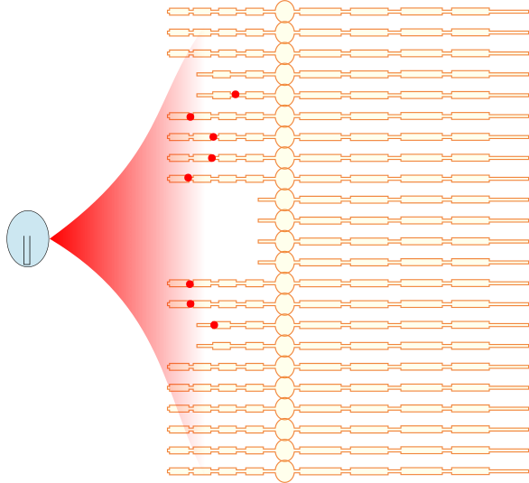

Electrode-neuron interface as a limiting factor in cochlear implant efficacy
Jaime A. Undurraga, Astrid van Wieringen, Deborah Vickers, Rajeev Mathew
2017-02-11
Polarity Normal Auditory Nerve
| Cathodic excitation | Anodic excitation |
|---|---|
 |
 |
- Anodic Threshold larger than Cathodic Threshold
- Anodic produces central excitation; Cathodic produces peripheral excitation (Rattay et al. 2001; see poster PS 270)
Partially/severe degenerated Auditory Nerve
| Cathodic excitation | Anodic excitation |
|---|---|
|  |  |
- Cathodic Threshold larger than Anodic Threshold
- Anodic produces central excitation; Cathodic produces peripheral excitation
Human data
 Loudness balancing Anodic vs. Cathodic (Undurraga et al., 2013)
Loudness balancing Anodic vs. Cathodic (Undurraga et al., 2013)
- Similar effect observed with ECAPs and EABRs.
Methods: Pulse shape
- Stimuli: SYM, PSA, PSC, and ALTPS at 150 or 75 pps. All PS stimuli had a 1/8 ratio.

Loudness contours
 |
Mean difference between ALTPS and PSA, PSC, and SYMA:
- Threshold: 5.3 dB / CL: 0.5 dB / DR: 4.7 dB
Pitch comparisons to ALTPS
Two-way non-parametric RM-ANOVA (ALTPS conditions and DR)
- condition p < 0.001 and DR % p = 0.029 were significant.
 |
Pitch comparisons to ALTPS
 |
Results

Results

| Behavioural Fail | Behavioural Pass | |
|---|---|---|
| eACC Fail | 15 | 1 |
| eACC Pass | 3 | 21 |
- For more details see poster PS 726
Acknowledgments
 |
 |
|
| Rajeev Mathiew | Debi Vickers | Astrid van Wieringen |
| UCL | UCL | KU Leuven |
- Thank to all the participants.
- Thank to you for listening.